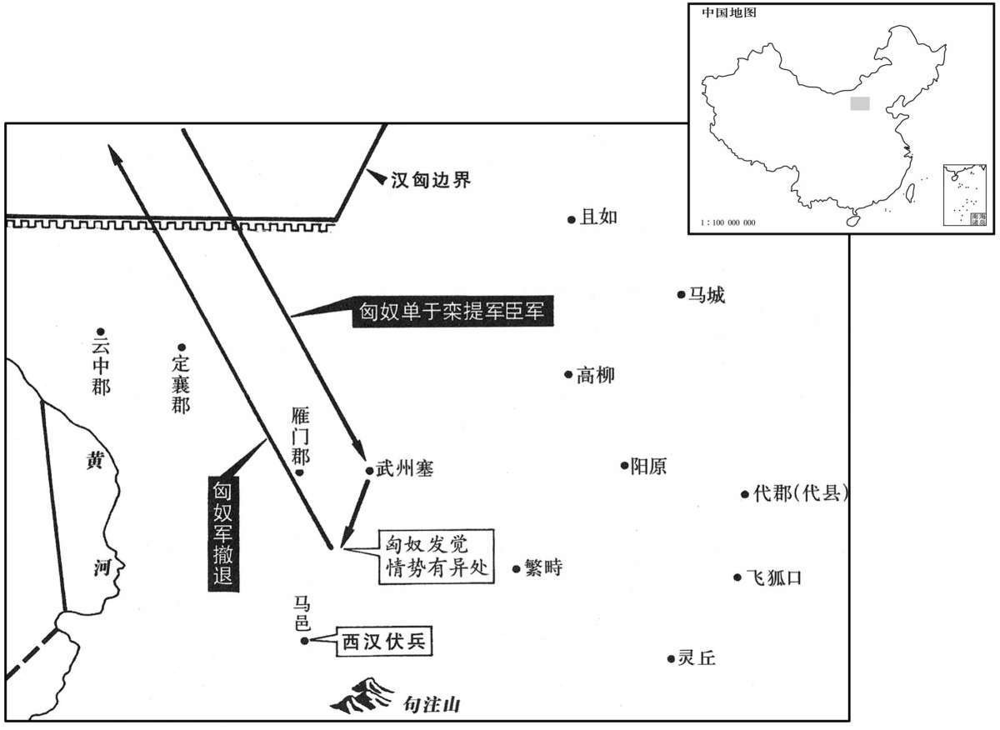

公元前133年资治通鉴：本年记事、原文与白话对照
按原书编年位置阅读；追叙和史论不等于本年发生的事件。白话采用所据译本，缺译不以生成译文补齐。
卷18 · 本年记事
公元前133年 · 汉世宗孝武皇帝元光二年
元光二年〔（戊申、前一三三）〕

本年形势与背景参考图
冬，十月，上行幸雍，祠五畤。〔雍，于用翻。畤，音止。〕
冬季，十月，武帝来到雍地，在五举行祭祀。
李少君以祠灶却老方见上，〔祠灶者，祭灶以致鬼物，化丹砂以为黄金，以为饮食器，可以延年。方士之言云尔。少，诗照翻。〕上尊之、少君者，故深泽侯舍人，〔高祖功臣有深泽侯赵将夕，景帝三年，孙修嗣侯；七年，有罪，耐为司寇。少君当是为修舍人。班志，涿郡有南深泽县。〕匿其年及其生长，〔谓其生时及长时所居止处也。长，知两翻。〕其游以方徧诸侯，无妻子。人闻其能使物及不死，〔如淳曰：物，谓鬼物也。〕更馈遗之，〔更，工衡翻。遗，于季翻。〕常余金钱、衣食。人皆以为不治生业而饶给，又不知其何所人，愈信，争事之。〔治，直之翻。〕少君善为巧发奇中。〔如淳曰：时时发言有所中也。中，竹仲翻。〕尝从武安侯饮，〔田蚡封武安侯。〕坐中有九十余老人，〔坐，徂卧翻；下同。〕少君乃言与其大父游射处；老人为儿时从其大父，识其处，〔师古曰：识，记也，式志翻。〕一坐尽惊。少君言上曰：“祠灶则致物，致物而丹沙可化为黄金，寿可益，蓬莱仙者可见；见之，以封禅则不死，黄帝是也。臣尝游海上，见安期生，〔列仙传：安期生，琅邪人，卖药东海边，时人皆言千岁。〕食臣枣，大如瓜。〔食，祥吏翻。〕安期生仙者，通蓬莱中，合则见人，不合则隐。”于是天子始亲祠灶，遣方士入海求蓬莱安期生之属，而事化丹沙诸药齐为黄金矣。〔药之分齐。齐，才计翻。〕居久之，李少君病死，天子以为化去，不死；而海上燕、齐怪迂之方士多更来言神事矣。〔更，工衡翻。〕
李少君凭借祭祀灶神求长生不老的方术进见武帝，武帝很尊敬他。 李少君是已去世的深泽侯的舍人，他隐瞒了自己的年龄、出生成长的地方，凭借着他的方术周游结交诸侯，没有妻子儿女。人们听说李少君能役使鬼神万物，并有长生不老的方术，纷纷赠送财礼给他，所以他经常有余剩的金钱和衣食用品。人们都认为他不经营产业却很富袷，又不知他是什么地方的人，更加相信他，争着侍奉他。李少君善于用巧妙的语言猜中一些离奇的事情。他曾经陪武安侯田饮酒，座中有位九十多岁的老人，李少君就说起与老人的祖父一起游玩射猎的地方；老人还是儿童时曾跟随祖父，记得那个地方，满座的客人都大吃一惊。李少君对武帝说：“祭祀灶神就能招来奇异之物，招来了奇异之物就可以使丹砂化为黄金，可以延年益寿，可以见到蓬莱的仙人。见到仙人，进而举行封禅仪式，就可以长生不死，黄帝就是这样的。我曾经在海上漫游，遇见了安期生，他给我枣吃，那枣如同瓜一般大。安期生是仙人，往来于蓬莱仙境，谁和他合，他就显身相见，谁和他不合，他就隐身不见。”于是武帝就开始亲自祭祀灶神，派遣方士到大海中去寻找蓬莱安期生之类的仙人，并且从事熔化丹砂和其它药物，企图炼出黄金。过了很久，李少君病死，武帝认为他化身成仙，并没有死去；因此，燕地、齐地等沿海地区那些怪诞迂谬的方士，纷纷前来对武帝谈论有关神仙的事情了。
亳人谬忌奏祠太一。〔如淳曰：亳，亦薄也。晋灼曰：亳县属济阴郡。予据班志，亳属山阳郡；“亳”作“薄”，谬，姓也，音靡幼翻，与缪同；战国时，赵有宦者令缪贤。太一者，天之尊神。天文志：中宫天极星，其一明者，太一常居也。淮南子：太微者，太一之庭；紫宫者，太一之居。索隐曰：乐汁征图云：天宫，紫微；北极，天一、太一。宋均云；天一、太一，北极神之别名。春秋佐助期云：紫宫，天皇耀魄宝之所理也。石氏云：天一、太一各一星，在紫宫门外立，承事天皇大帝。〕方曰：“天神贵者太一，太一佐曰五帝。”〔五帝，谓东方青帝灵威仰，南方赤帝赤熛怒，西方白帝白招矩，北方黑帝叶光纪，中央黄帝含枢纽也。一说：苍帝名灵符，赤帝名文祖，白帝名显记，黑帝名玄矩，黄帝名神斗。〕于是天子立其祠长安东南郊。
毫县人谬忌奏请武帝祭祀太一神。他在上奏的方形木牍上写道：“天神中最尊贵的是太一神，太一神的辅佐是五帝神。”于是，武帝就在长安的东南郊建立了祭祀太一神的祭坛。
雁门马邑豪聂壹，〔马邑县属雁门郡。豪，谓以赀财、武力雄于乡曲者。聂，姓也。姓谱曰：楚大夫食采于聂，因以为氏。壹，其名。聂，尼辄翻。〕因大行王恢言：“匈奴初和亲，亲信，边可诱以利致之，伏兵袭击，必破之道也。”上召问公卿。王恢曰：“臣闻全代之时，〔战国之初，代自为一国，故曰全代；其后为赵襄子所灭，代始属赵。服虔曰：代未分之时也。李奇曰：六国之时，代为一国，尚能以击匈奴；况今加以汉之大乎！〕北有强胡之敌，内连中国之兵，然尚得养老、长幼，〔长，知两翻。〕种树以时，仓廪常实，匈奴不轻侵也。今以陛下之威，海内为一；然匈奴侵盗不已者，无他，以不恐之故耳。〔言不示以威，故匈奴不知惧也。〕臣窃以为击之便。”韩安国曰：“臣闻高皇帝尝围于平城，〔事见十一卷高祖七年。〕七日不食；及解围反位而无忿怒之心。夫圣人以天下为度者也，〔师古曰：言当随天下人心而宽大其度量也。〕不以己私怒伤天下之公，故遣刘敬结和亲，至今为五世利。臣窃以为勿击便。”恢曰：“不然。高帝身被坚执锐，行几十年，〔被，皮义翻。几，居衣翻。〕所以不报平城之怨者，非力不能，所以休天下之心也。今边境数惊，〔数，所角翻。〕士卒伤死，中国槥车相望，〔应劭曰：槥，小棺也，今谓之椟。金布令曰：不幸死，所为椟传归所居县。师古曰：从军死者，以槥送致其丧；载槥之车相望于道，言其多也。槥，音卫。〕此仁人之所隐也。〔隐，恻也；张晏曰：痛也。〕故曰击之便。”安国曰：“不然。臣闻用兵者以饱待饥，正治以待其乱，定舍以待其劳；故接兵覆众，伐国堕城，〔师古曰：覆，败也；堕，毁也；言兵与敌接则败其众，所伐之国则堕其城也。堕，读曰隳。〕常坐而役敌国，此圣人之兵也。今将卷甲轻举，〔卷，读曰卷。〕深入长驱，难以为功；〔驱，与驱同。〕从行则迫胁，衡行则中绝，〔从，子容翻。衡，读曰横。〕疾则粮乏，徐则后利，〔师古曰：后利，谓不及于利。后，户遘翻。〕不至千里，人马乏食。兵法曰：『遗人，获也。』〔言以军遗敌人，令其禽获也。遗，于季翻。〕臣故曰勿击便。”恢曰：“不然。臣今言击之者，固非发而深入也；将顺因单于之欲，诱而致之边，〔诱，音酉。〕吾选枭骑、壮士阴伏而处以为之备，〔枭，古尧翻。骑，奇寄翻。〕审遮险阻以为其戒。吾势已定，或营其左，或营其右，或当其前，或绝其后，单于可禽，百全必取。”上从恢议、〔考异曰：史记韩长孺传，元光元年，聂壹画马邑事；而汉书武纪在二年。盖元年壹始言之，二年议乃决也。〕
雁门郡马邑县的豪强之士聂壹，通过大行王恢向武帝建议：“匈奴刚刚与汉和亲结好，亲近信任边境吏民，可用财利引诱他们前来，汉军预设伏兵袭击，这是肯定会打败匈奴人的妙计。”武帝召集公卿讨论这个建议，战国之初，代国保有它的全境时，北面有强敌匈奴的威胁，内受中原诸国军队的牵制，但仍然可以尊养老人，抚育幼童，按照季节时令种粮植树，粮仓中一直有充足的储粮，匈奴不敢轻易入侵。现在，凭陛下的神威，天下一统，但匈奴的入侵却持续不断，形成这种局面的原因，没有别的，只是因为在于没有使匈奴恐惧罢了。我私下认为打击匈奴对国家有利。”韩安国说：“我听说高皇帝曾被匈奴围困在平城，七天没能吃上饭；等到解脱围困返回都城之后，却没有愤怒之心。圣人有包容天下的器度，不因自身的私怒而伤害天下大局，所以高皇帝派遣刘敬为使臣与匈奴和亲，到现在已为五世的人带来益处。我私下认为不打匈奴对国家有利。”王恢说：“不对。高帝身披铠甲，手执利器，征战将近几十年，他不向匈奴报复被困平城的怨恨，并不是因为力所不及，而是出于让天下人休息的仁心。现在边境经常受到匈奴侵扰，受伤战死的士兵很多，中原地区运载死亡士兵棺木的车辆络绎不绝，这是仁人所悲痛的事。所以说打匈奴是应当的。”韩安国说：“不对。我听说善于用兵的人，让自己的军队温饱以等待敌军饥饿，严明军纪以等待敌军混乱，安居军营以等待敌军疲劳。所以，崐一旦交战，就会全歼敌人；一旦进攻敌国，就会攻破城防，经常安坐不动地迫使敌人俯首听命，这是圣人的作战方法。现在如果轻易地对匈奴用兵，长驱直崐入，难以成功；如果孤军深入就会受到威胁，齐头并进就没有后继，进军太快就会缺乏粮食给养，进军缓慢就会丧失有利的战机，还没有走到一千里，就会人马都缺乏粮食。这正是《兵法》所说：‘派出军队，就会被敌人擒获。’所以我说不打匈奴为好。”王恢说：“不对。我现在所说的打匈奴的方法，本不是征发军队深入敌境；而是要利用单于的贪欲，引诱他们到我们的边境，我们挑选骁勇的骑兵和壮士，暗中埋伏，用来防备敌军，谨崐慎地据守险要的地势，以加强防御的力量。我们的部署已经完成，有的军队攻崐打敌军左翼，有的军队攻打敌军右翼，有的军队阻止敌人前进，有的军7断绝敌人的退路，这样就肯定能擒住单于，必定大获全胜。”武帝采纳了王恢的主张。
夏，六月，以御史大夫韩安国为护军将军，卫尉李广为骁骑将军，太仆公孙贺为轻车将军，大行王恢为将屯将军，〔司马彪曰：轻车，古之战车。李奇曰：将屯，主监诸屯。〕太中大夫李息为材官将军，将车骑、材官三十余万匿马邑旁谷中，约单于入马邑纵兵。阴使聂壹为间，〔间，古苋翻。〕亡入匈奴，谓单于曰：“吾能斩马邑令、丞，以城降，〔县有令，有丞，长吏也。〕财物可尽得。”单于爱信，以为然而许之。聂壹乃诈斩死罪囚，县其头马邑城下〔县，古悬字通。〕示单于使者为信，曰：“马邑长吏已死，〔长，知两翻。〕可急来！”于是单于穿塞，将十万骑入武州塞。〔班志，武州县属雁门郡。崔浩曰：今平城首西百里有武州城是也。杜佑曰：武州塞在朔州善阳县界。〕未至马邑百余里，见畜布野〔畜，许救翻。〕而无人牧者，怪之。乃攻亭，得雁门尉史，欲杀之；〔师古曰：汉律：近塞皆置尉，百里一人，士史、尉史各二人。时雁门尉史行徼见寇，因保此亭。〕尉史乃告单于汉兵所居。单于大惊曰：“吾固疑之。”乃引兵还，出曰：“吾得尉史，天也！”以尉史为天王。塞下传言单于已去，汉兵追至塞，度弗及，乃皆罢兵。〔度，徒洛翻。〕王恢主别从代出击胡辎重，〔重，直用翻。〕闻单于还，兵多，亦不敢出。
夏季，六月，汉武帝任命御史大夫韩安国为护军将军，卫尉李广为骁骑将军，太仆公孙贺为轻车将军，大行王恢为将屯将军，太中大夫李息为材官将军，统率战车、骑兵、步兵共三十多万人暗中埋伏在马邑附近的山谷中，约定等单于进入马邑就挥军出击。汉军暗地派聂壹当间谍，逃到匈奴人那儿，聂壹对单于说：“我能杀马邑县的县令和县丞，献城归降，您可以得到全城的所有财物。”单于很喜欢信任聂壹，认为他说得对，就同意了他的计划。聂壹返回马邑县城，就斩杀死刑囚犯，用来假冒县令、县丞，把他们的头挂在马邑城下，让单于的使者观看，以此做为证明，说：“马邑县的长官已经死了，你们可以赶快来！”于是，单于越过边塞，统率十万骑兵进入武州塞。走到距离马邑县城还有一百多里的地方，单于见牲畜遍野，却没有一个放牧的人，感到奇怪。单于就派人攻打亭隧，俘虏了雁门郡的尉史，要杀掉他，这个尉史就告诉单于汉兵埋伏的地点。单于大吃一惊，说：“我本来就怀疑其中有诈。”就领兵撤退，在撤出汉境之后，单于说：“我俘虏了这个尉史，是天保佑我啊！”就称尉史为“天王”。边塞守军传报单于已率军退走，汉军追到边塞，估计追不上了，就全军撤回。王恢指挥另一支军队，从代地出发，准备袭击匈奴的后勤给养，听说单于返回，军队很多，也不敢出击。
上怒恢。恢曰：“始，约为入马邑城，兵与单于接，而臣击其辎重，可得利。今单于不至而还，臣以三万人众不敌，只取辱，固知还而斩，然完陛下士三万人。”于是下恢廷尉，〔下，遐嫁翻。〕廷尉当，“恢逗桡，当斩。”〔应劭曰：逗，曲行避敌也。桡，顾望也。如淳曰：军行而逗留、畏懦者，要斩。师古曰：应说非也。逗，留止也。桡，谓屈弱也。逗，音豆，又音住。桡，奴教翻。〕恢行千金丞相蚡，蚡不敢言上，而言于太后曰：“王恢首为马邑事，今不成而诛恢，是为匈奴报仇也。”〔蚡，房吻翻。是为，于伪翻。〕上朝太后，〔朝，直遥翻。〕太后以蚡言告上。上曰：“首为马邑事者恢，故发天下兵数十万，从其言为此。且纵单于不可得，恢所部击其辎重，犹颇可得以尉士大夫心。〔尉，与慰同。〕今不诛恢，无以谢天下。”于是恢闻，乃自杀。自是之后，匈奴绝和亲，攻当路塞，〔师古曰：塞之当行道处者。〕往往入盗于汉边，不可胜数；然尚贪乐关市，〔匈奴与汉人于边为互市，如今之回易场也。胜，音升。乐，音洛。〕嗜汉财物，汉亦关市不绝以中其意。〔中，竹仲翻。〕
武帝对王恢很恼怒。王恢说：“根据原来的计划，约定引匈奴进入马邑县城，主力军队与单于交战，而我率军袭击他们的后勤给养，可以获胜。现在单于未到马邑就全军撤回，我用三万人的军队打不过匈奴大军，那样做只能是自辱。我本知道撤兵回来是要杀头的，但这样却保全了陛下的三万将士。”于是汉武帝就把王恢交附廷尉审判，廷尉判决：“王恢避敌观望，不敢出击，判处斩首。”王恢暗中向丞相田行贿一千金，求他开脱罪名，田不敢向武帝说，就对太后说：“王恢第一个提出了在马邑诱歼匈奴主力的计划，现在行动失败而杀了王恢，这是等于为匈奴报了仇啊。”武帝朝见太后时，太后就把田的话告诉了武帝。武帝说：“王恢是马邑计划的主谋，我听从了他的建议，调集了天下几十万人马，安排了这次军事行动。况且，即使捉不到单于，王恢的军队袭击匈奴的后勤给养，仍然可以安慰将士们的心。如今不杀王恢，无法向天下人谢罪。”王恢得知了武帝的话，就自杀了。从此之后，匈奴断绝了与汉的和亲，进攻扼守大路的要塞，常常入侵汉朝边境，不可胜数；但是匈奴仍然贪图在边关的互市贸易，喜爱汉朝的财物；汉朝也不关闭边境贸易市场，以投其所好。